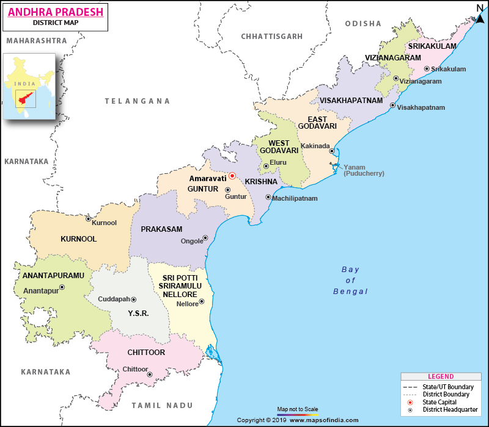

ABOUT
Andhra Pradesh is one of the 28 states of India, situated in the south-eastern part of the country. It is the eight-largest state in India, covering an area of 162,975 km2 (62,925 sq mi).As per the 2011 census, it is the tenth-most populous state, with 49,386,799 inhabitants. The largest city in Andhra Pradesh is Visakhapatnam. Telugu, one of the classical languages of India, is the major and official language of Andhra Pradesh. The north-western portion of Andhra Pradesh was separated to form the new state of Telangana on 2 June 2014, and Hyderabad, the longtime capital of Andhra Pradesh, was transferred to Telangana as part of the division. However, in accordance with the Andhra Pradesh Reorganisation Act, 2014, Hyderabad was to remain the acting capital of both Andhra Pradesh and Telangana states for a period of time not exceeding ten years. The new riverfront de facto capital, Amaravati, is under the jurisdiction of the Andhra Pradesh Capital Region Development Authority (APCRDA). Andhra Pradesh has a coastline of 974 km (605 mi) – the second-longest coastline among the states of India, after Gujarat – with jurisdiction over almost 15,000 km2 of territorial waters.The state is bordered by Telangana in the north-west, Chhattisgarh and Odisha in the north-east, Karnataka in the west, Tamil Nadu in the south, and to the east lies the Bay of Bengal. The small enclave of Yanam, a district of Puducherry, lies to the south of Kakinada in the Godavari delta on the eastern side of the state.
NATURAL VEGETATION & CONSERVATION
The Andhra Pradesh Forest Department deals with protection, conservation and management of forests. The total forest
cover of the state after the bifurcation is left with an area of 22,862 km2. The forest in the state can be broadly
divided into four major biotic provinces.They are:
- Deccan Plateau
- Central Plateau
- Eastern Highland
- East Coastal Plains
CLIMATE
The climate of Andhra Pradesh varies considerably, depending on the geographical region. Summers last from March to June. In the coastal plain, the summer temperatures are generally higher than the rest of the state, with temperature ranging between 20 °C and 41 °C. July to September is the season for tropical rains. About one-third of the total rainfall is brought by the northeast monsoon. October and November see low-pressure systems and tropical cyclones form in the Bay of Bengal which, along with the northeast monsoon, bring rains to the southern and coastal regions of the state. November, December, January, and February are the winter months in Andhra Pradesh. Since the state has a long coastal belt the winters are not very cold. The range of winter temperature is generally 12 °C to 30 °C. Lambasingi in Visakhapatnam district is the only place in South India which receives snowfall because of its location as at 1,000 m (3,300 ft) above the sea level. It is also nicknamed as the "Kashmir of Andhra Pradesh" and the temperature ranges from 0 °C to 10 °C.
FOOD


LANGUAGE & RELIGION
LANGUAGE
The official language of Andhra Pradesh is Telugu. The Minister of Tourism and Culture has issued a declaration of the Telugu language as a Classical Language.
RELIGIONS
Majority of the people in Andhra Pradesh are Hindus while Muslims constitute a sizeable minority. According to the 2011 census, the major religious groups in the state are Hindus (90.87%), Muslims (7.32%) and Christians (1.38%). Buddhists, Sikhs, Jains and the people who declined to state their religion make up the remaining portion of population.


Hinduism
Venkateswara Temple at Tirupati is the world's second-richest temple and is visited by millions of devotees throughout the year. Andhra Pradesh is home to Shankaracharya of Pushpagiri Peetham. Other Hindu saints include Sadasiva Brahmendra, Bhaktha Kannappa, Yogi Vemana, Sathya Sai Baba and Pothuluru Veerabrahmendra.
Mahayana Buddhism
Buddhism spread to Andhra Pradesh early in its history. The Krishna River valley was "a site of extraordinary Buddhist activity for almost a thousand years.The ancient Buddhist sites in the lower Krishna Valley, including Amaravati, Nagarjunakonda and Jaggayyapeta "can be traced to at least the third century BCE, if not earlier. The region played a central role in the development of Mahayana Buddhism, along with the Magadha-area in northeastern India. A.K. Warder holds that "the Mahāyāna originated in the south of India and almost certainly in the Andhra country. According to Xing, "Several scholars have suggested that the Prajnaparamita probably developed among the Mahasamghikas in Southern India probably in the Andhra country, on the Krishna River.The Prajñāpāramitā Sutras belong to the earliest Mahayana Sutras.